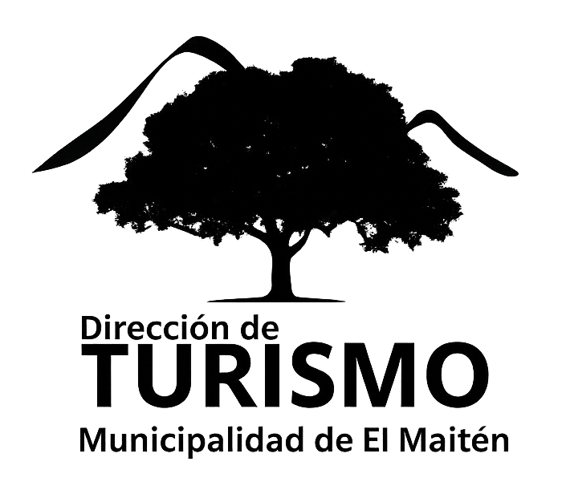
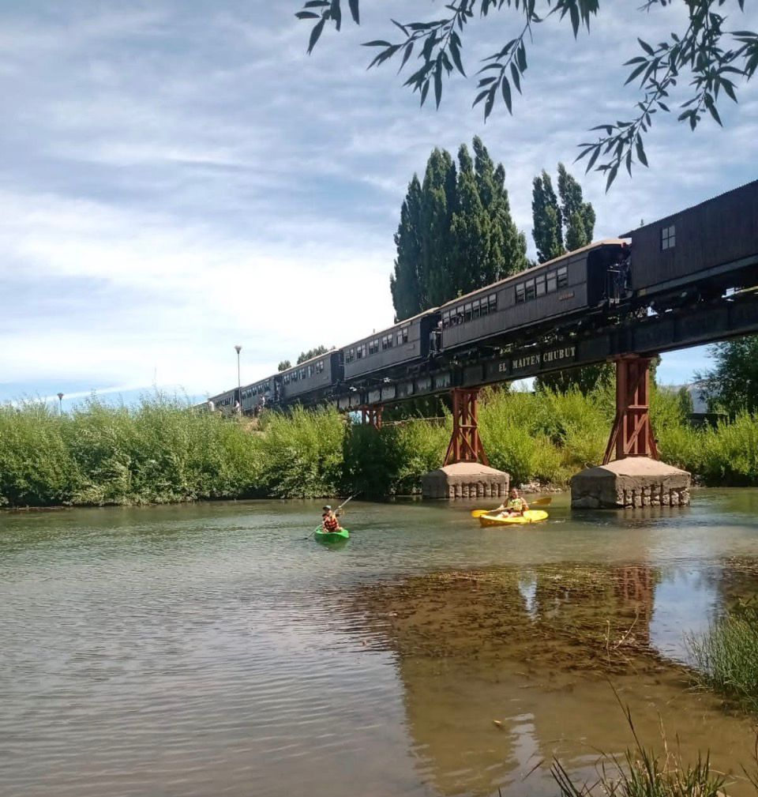

Origen
El nombre El Maitén
Su nombre nace del árbol nativo maitén, símbolo de abrigo y equilibrio para quienes habitaron primero esta tierra.

Pueblo patagónico en el corazón de Chubut: historia, La Trochita y paisajes que se transforman en cada estación. Un destino para recorrer con calma y volver a visitar.
Explorar© 2026 Turismo El Maitén. Todos los derechos reservados.
El Maitén no se cuenta solo en fechas: se siente en el viento, en la memoria de sus vías y en la calma de un paisaje que abraza cada historia.
Su nombre nace del árbol nativo maitén, símbolo de abrigo y equilibrio para quienes habitaron primero esta tierra.

Antes de los colonos, comunidades mapuches y tehuelches caminaron este territorio en diálogo permanente con la naturaleza.

La construcción del ramal de La Trochita marcó un antes y un después: trabajo, encuentro y crecimiento para toda la región.

Hoy, El Maitén conserva su identidad con orgullo: historia sobre rieles, paisajes vivos y una calma que invita a volver.

Un recorrido ideal para caminatas y miradores panorámicos. Combina aventura, aire puro y postales únicas de la cordillera y el valle.

A pocos kilómetros de El Maitén, este rincón invita a desconectar entre formaciones rocosas, vegetación autóctona y una calma que inspira.

La Grutita es un espacio de recogimiento muy querido por la comunidad, y el Cerro de la Cruz ofrece una vista panorámica del pueblo, el río Chubut y sus alrededores.

Un entorno rural patagónico con historia, naturaleza y vida local. Perfecto para conocer otra cara de la región y sumar experiencias auténticas.
El invierno cubre el paisaje de blanco y regala postales inolvidables. Caminatas, aire puro y la calma de la nieve transforman cada rincón en una experiencia única.
El otoño pinta el pueblo de dorados y rojizos: bosques, caminos y cielos que invitan a caminar despacio y sacar fotos en cada esquina.
Postales únicas para descubrir caminos, miradores y rincones de naturaleza en El Maitén.




Dos propuestas emblemáticas del calendario maitenense. Consultá fechas, ubicación y entradas por WhatsApp — como en un ticket para no perderte nada.

Encuentro con la historia viva del vapor, visitas guiadas, actividades en torno a La Trochita y el espíritu ferroviario que define al pueblo.

Cada 22 de diciembre, El Maitén se viste de fiesta. Celebramos un año más de este querido pueblo cordillerano con una jornada tradicional, actos públicos, entrega de viviendas y actividades gratuitas para toda la comunidad.

Rituales, música, artesanos y el mate como símbolo de encuentro. Una celebración para vivir en comunidad y conocer sabores y tradiciones de la región.
Reservas
Estamos para ayudarte a planificar tu visita. Escribinos y te respondemos con recomendaciones, horarios y actividades.